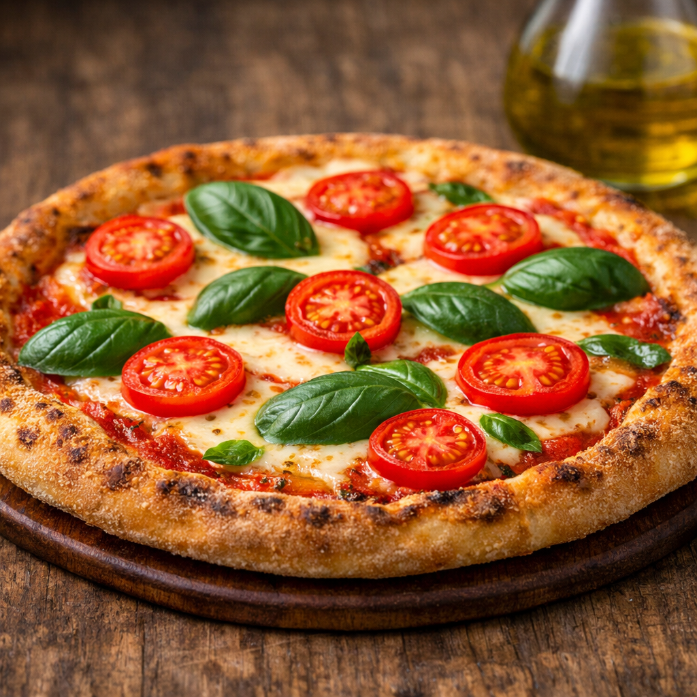
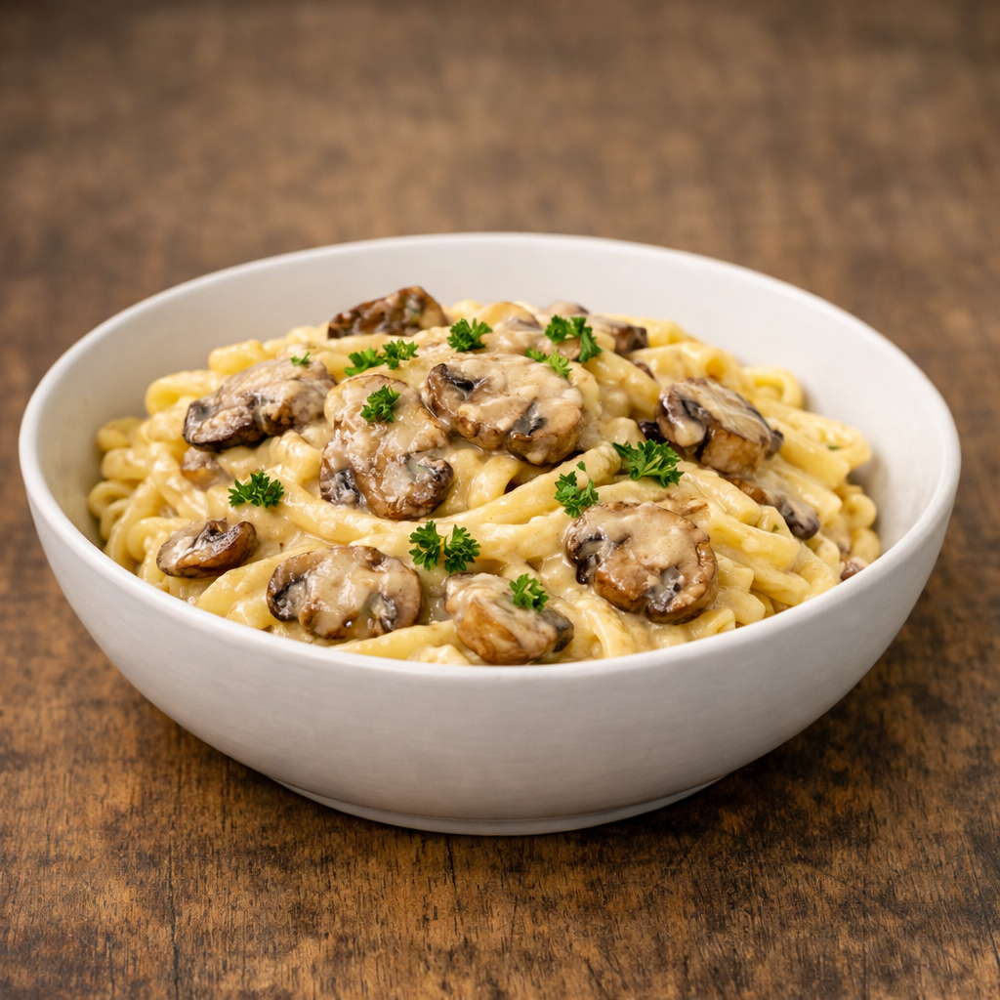
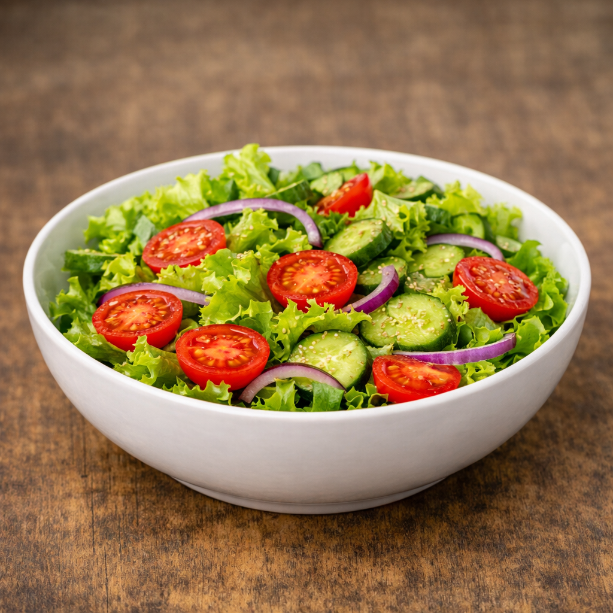
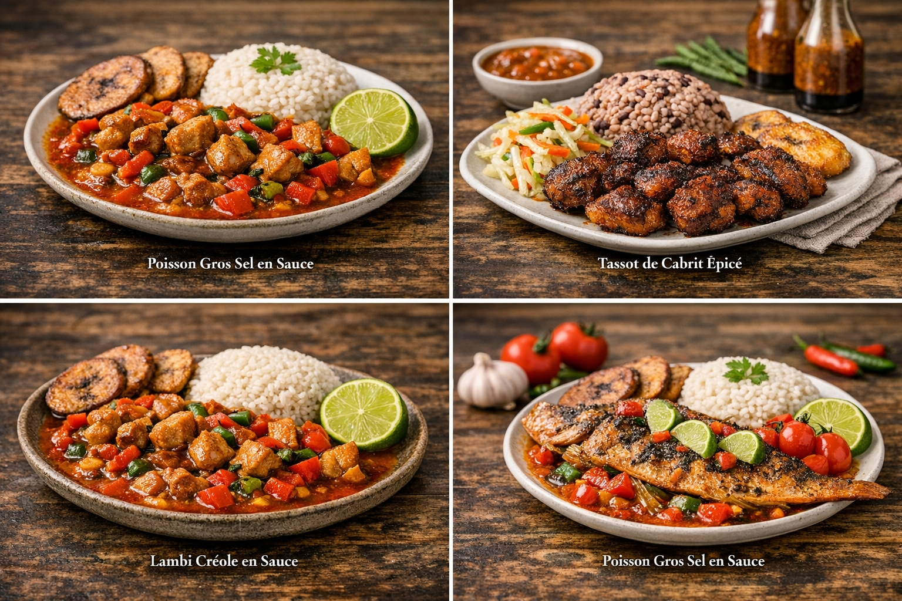
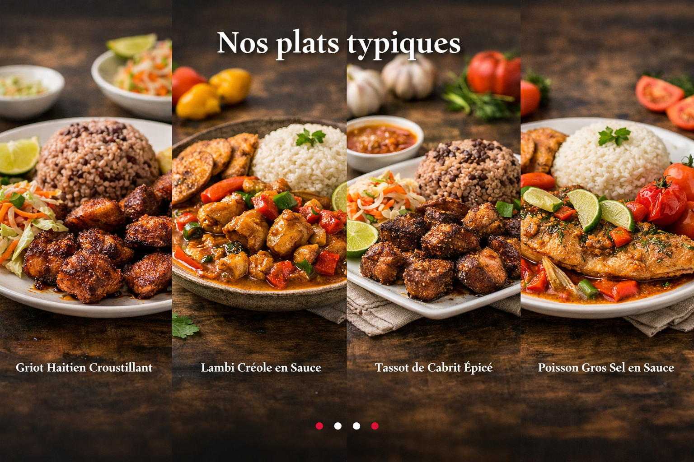
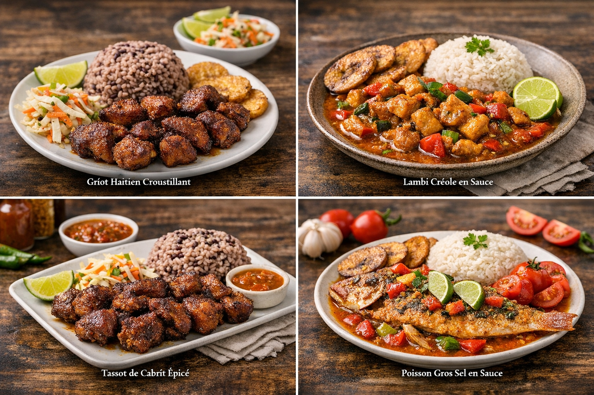
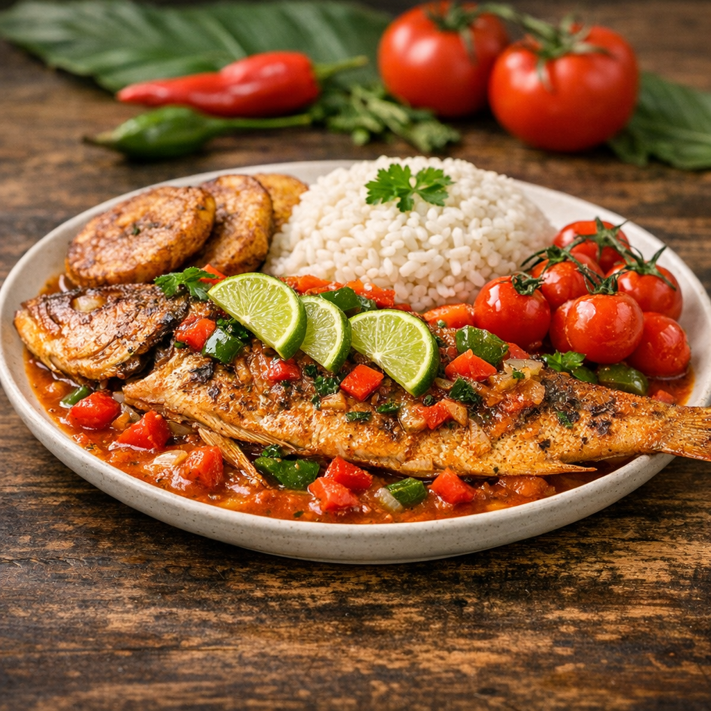

Une expérience culinaire unique à Jacmel

Tomates fraîches, mozzarella, basilic.

Sauce crémeuse aux champignons.

Légumes bio et vinaigrette maison.




Nous sommes passionnés par la cuisine authentique et les ingrédients frais. Venez découvrir nos plats préparés avec amour.
📍 Adresse : Rue Petion, Jacmel, Haïti
📞 Téléphone : +509 36895533
Réserver une table